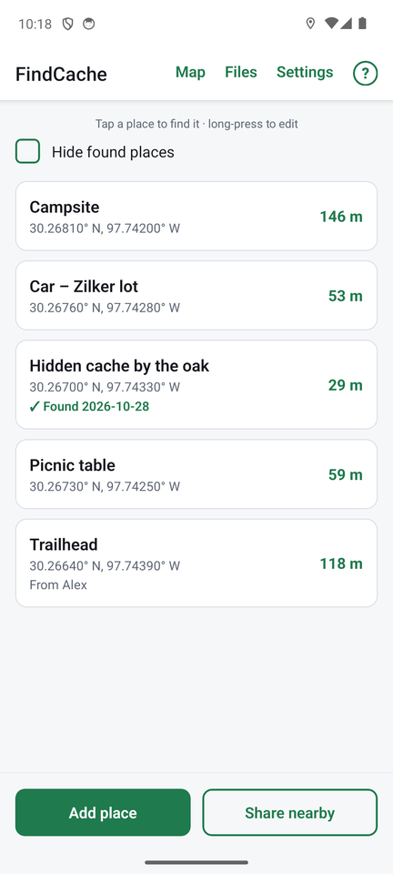

FindCache
FindCache is a free Android app for saving places and finding your way back to them, like geocaching, but without an account, ads or tracking. Everything stays on your phone.

What it does
- Save a place with one tap from where you are standing, or type in coordinates. Add notes, such as a hint.
- Find it again. A compass points at the place and shows how far away it is, along with an uncertainty radius that tells you how close you can honestly expect to get.
- Search area. When you are close, the compass turns into a small map of the area where the place most likely is, optionally over a street map or satellite picture.
- Average your position for a steadier, more accurate answer (see below).
- Maps that work with no signal, once you have saved an area.
- Swap places with friends nearby over Bluetooth, with no internet and no account. Import and export GPX files from geocaching.com and GPS units.
- Mark places as found and keep a log.
How averaging narrows the uncertainty
A phone's GPS position never sits still. Even when you stand perfectly still, each reading wanders a few metres, so one reading can be off by 5 to 10 metres or more, and the distance to a place jumps around.
FindCache can average your position. Stand still with a clear view of the sky, tap Average my position, and the app collects reading after reading. Random wander cancels out, so the average settles down, and the uncertainty radius shrinks as readings accumulate (a minute or two is plenty). You see the number of readings, how long it has been running, the estimated accuracy and how much the readings wander, so you know when it has done its job.
Use it in two places: when you save a place, so the place itself is recorded more accurately, and when you are looking for one, so the distance and arrow stop jumping. If you start walking, it stops by itself. And High-accuracy GPS in Settings makes the phone track every satellite it can hear, for the best fix.
Get it
Scan this code with your phone's camera, or download the app directly. It is an Android app (Android 7 or later), and it is free and open source.

The first time, Android asks you to allow installing the app from your browser: Getting started walks through it.
FindCache has no account, no ads and no analytics. Read the short FindCache privacy policy.
The user guide
Getting started
Install FindCache, give it the permissions it needs, save your first place and find it.
Saving places
Add a place from your position or from coordinates, average for accuracy, add notes, edit and delete.
Finding a place
The compass, distance and uncertainty radius, the search-area map, averaging while you look, and marking a place found.
Maps and offline use
See all your places on a street or satellite map, and save map areas for use with no signal.
Sharing places
Swap places with other FindCache users nearby over Bluetooth, and see who took yours.
Import and export
Bring in GPX files from geocaching.com and GPS units, or export your places as GPX or GeoJSON.
Settings
Every setting explained: your name for sharing, units, GPS accuracy, the search area, found places and sharing history.
Help and troubleshooting
Answers to common questions: GPS accuracy, the compass, Bluetooth sharing, maps, privacy and getting help.